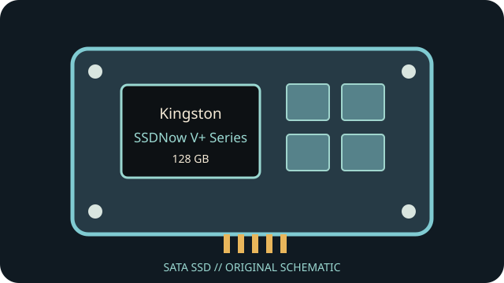

[ INDIVIDUAL COMPONENT // SATA SSD ]
Kingston SSDNow V+ Series 128 GB
Capacity- and part-specific archival record. Performance and construction notes are tied to the cited model documentation; do not generalize them across revisions.

IDENTIFICATION: Match exact part number SNV425-S2/128GB, capacity and revision to the physical label. OEM and regional suffixes can differ.
Specifications
| Manufacturer / model / SKU | Kingston SSDNow V+ Series — SNV425-S2/128GB |
|---|---|
| Capacity | 128 GB |
| Generation | 2010 client SATA SSD generation |
| Form factor | 2.5-inch, 9.5 mm |
| SATA generation / interface | SATA 3 Gb/s (SATA II) |
| Controller / NAND / performance / endurance | MLC NAND; Kingston-rated sequential transfer up to 200 MB/s read and 160 MB/s write for the V+ family/capacity. Controller and TBW are not stated here absent a revision-specific Kingston source. |
| TRIM / firmware | The series documentation describes TRIM for supported operating systems/firmware. Confirm drive firmware and host ATA pass-through; Kingston SSD Manager or legacy update tools may not recognize a discontinued revision. |
| Host compatibility | Standard 2.5-inch SATA data/power; SATA 3 Gb/s host link with backward link negotiation. Check BIOS/driver boot support; USB-SATA adapters can limit firmware tools, SMART and TRIM. |
Age-related handling & preservation
- Before use, record the label, serial, firmware, SMART health attributes, host/controller and a read-only data/health snapshot; keep verified backups.
- Peak transfer rates and historical endurance ratings do not guarantee remaining life, powered-off retention or recovery after controller failure. Inspect for corrosion, damaged connectors and prior repair.
- Firmware utilities, manuals, warranty coverage and host drivers may be discontinued. Do not update, secure-erase or cross-flash until the full part number/revision and a verified backup are established.
- Check OS TRIM/SMART support directly; bridge, RAID, driver and BIOS behavior can block or alter these features.
Manufacturer / manual sources
- Kingston — SSDNow V+ SNV425-S2 data sheetManufacturer data sheet covering the SNV425-S2 family and model specifications.
- Kingston — SSD Manager supportManufacturer software/support notes; current utility compatibility with this legacy model is not guaranteed.
Sources are HTTPS manufacturer product/support pages or product manuals. Match the complete drive label and document revision before applying family-level information to an individual unit.